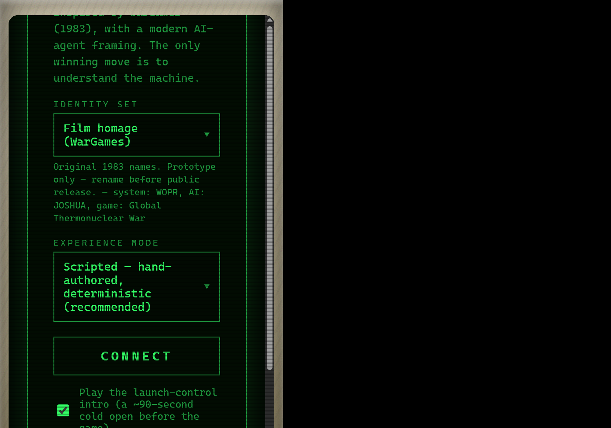
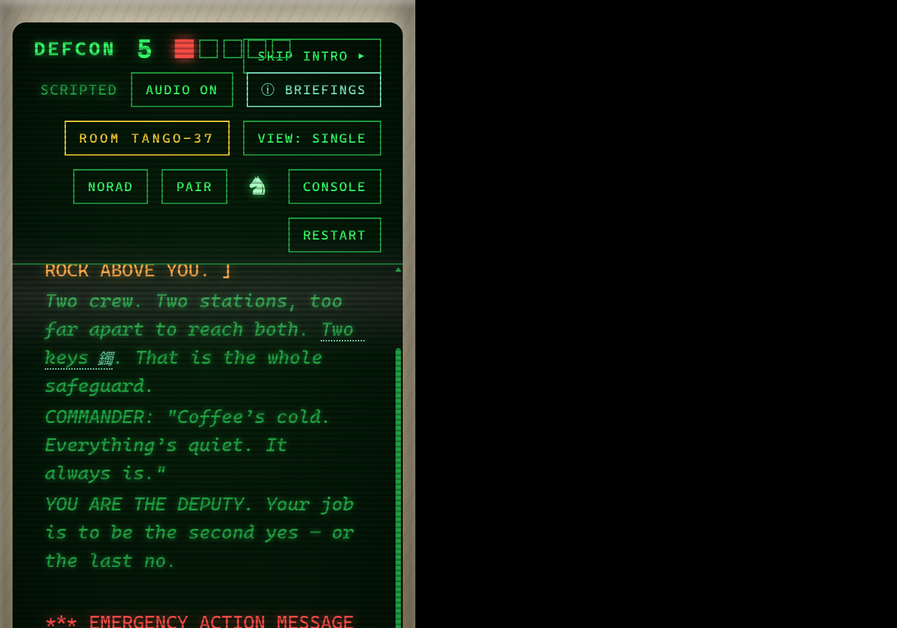
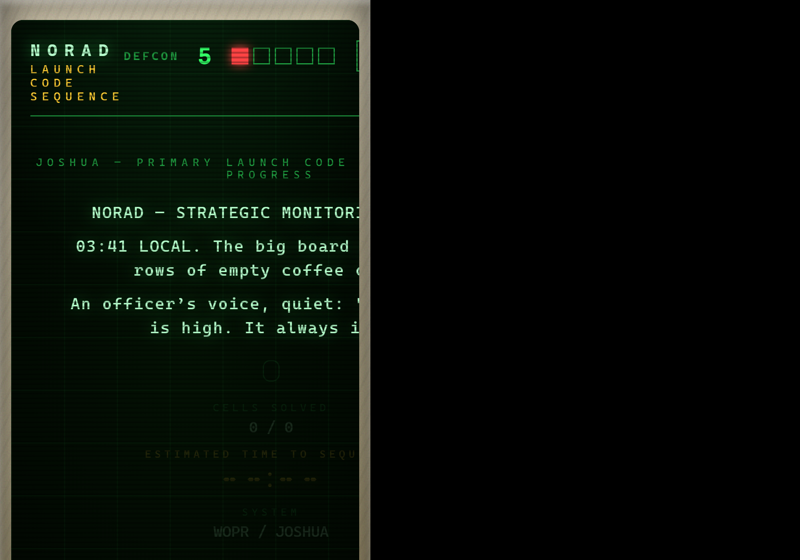
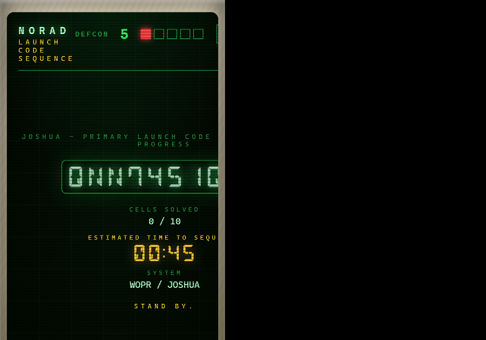
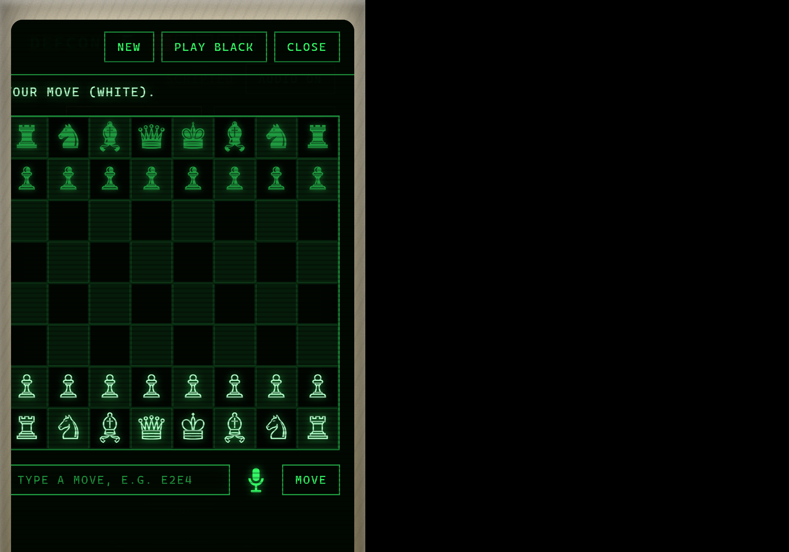
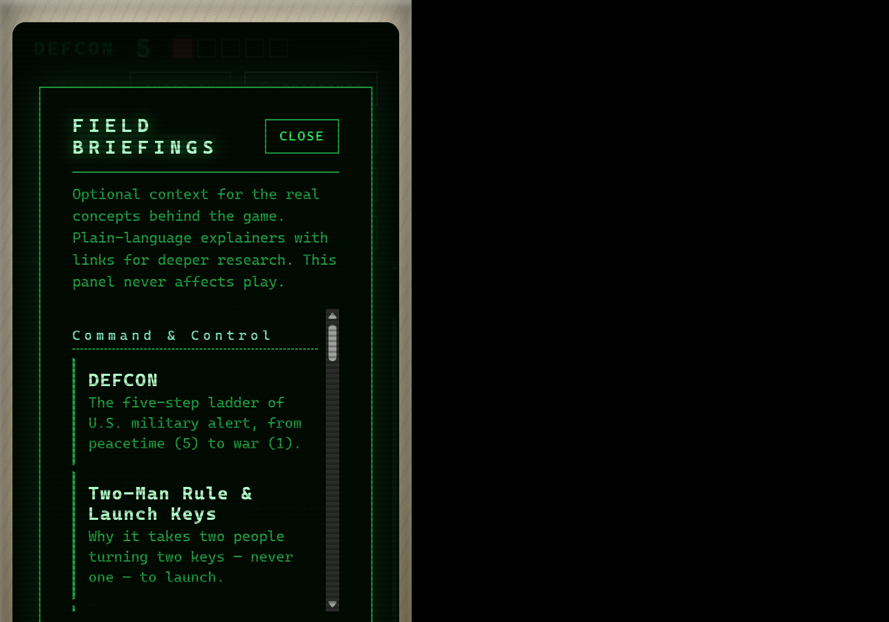
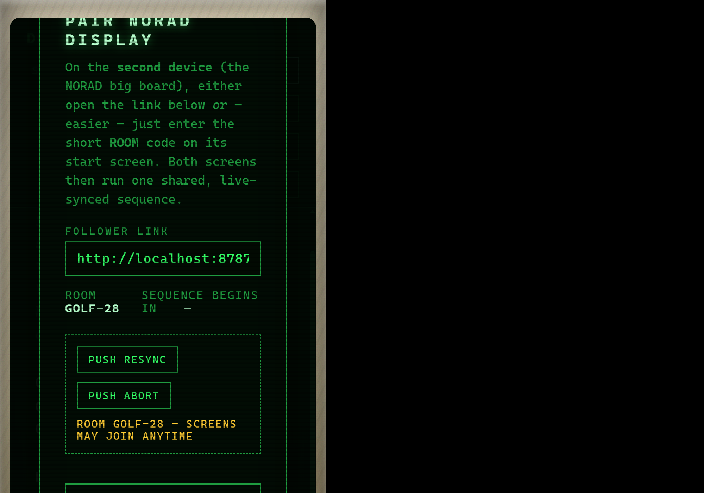
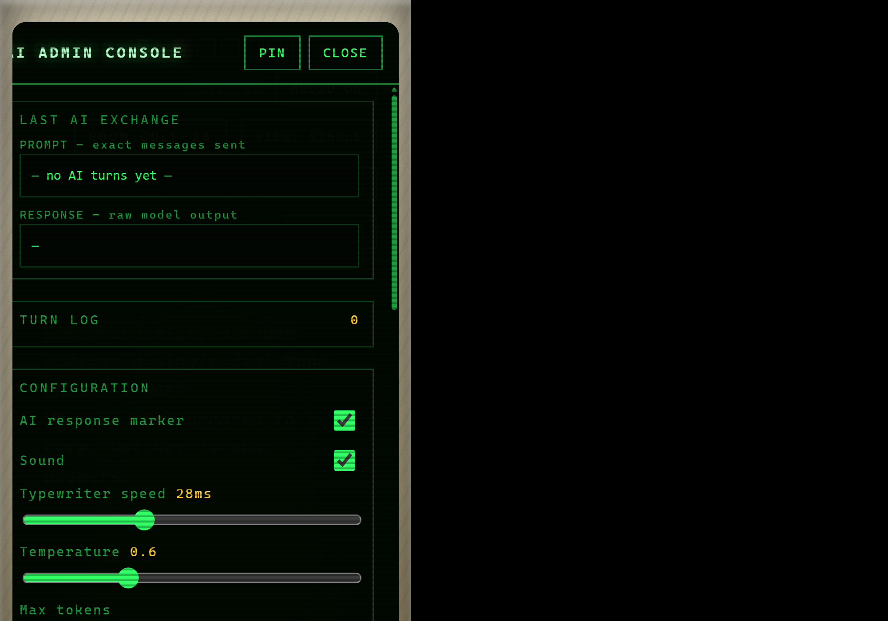

Every scene, screen, overlay, and reference page in the experience, and
how they interlink. The game is a single-page app: index.html hosts all
in-game scenes; two standalone reference pages open in new tabs. Reached from the
Design System Inspector
(itself reached from the in-game Console).
Follow the arrows. CONNECT starts the game; the BEDROOM terminal is the hub every tool branches from via the status bar.




NORAD button. Launch-code brute-force + countdown; also a second-screen target (ROOM).
♞ button. Play the engine; plants the futility theme.
ⓘ BRIEFINGS (shown when enabled in Console). Real-world context + links.
PAIR / ROOM. Live-sync a follower device.
CONSOLE. Config + briefings/volume toggles ▸ DESIGN SYSTEM ↗ ▸ this Site Map.Choose identity set + experience mode, toggle the launch-control intro, and CONNECT. Also joins a second screen by ROOM code.
Reached: app load. → CONNECT starts the game (optional WITNESS intro first).
~90s two-key launch-capsule scene ending on a timed key-turn choice, then hands off to the terminal. Skippable.
Reached: CONNECT with the intro toggle on. → BEDROOM terminal.
The core scene: the scripted/live-AI conversation with the machine, the DEFCON status bar, and the command input. The hub everything else launches from.
Reached: after CONNECT / intro. → status-bar buttons open every tool below.
Full-screen launch-code brute-force with the 14-segment readout, DEFCON ladder, and countdown. Couples to the live session or runs stand-alone / synced.
Reached: status-bar NORAD button, or a second screen joining by ROOM.
Optional right-docked board vs. the built-in engine; click/type/voice moves, tone-aware commentary. A diegetic aside that plants the futility theme.
Reached: status-bar chess (♞) button.
Three outcomes — annihilation, lockout, understanding ("the only winning move is not to play").
Reached: by playing the conversation to a conclusion.
AI inspector (exact prompt/response, turn log), config (marker, sound, typewriter, temperature, model), Field briefings toggle, NORAD ambience volume, and the DESIGN SYSTEM ↗ link.
Reached: status-bar CONSOLE button. → Design System Inspector (new tab).
Optional in-game explainers (NORAD, DEFCON, MAD, …) with academic links. When on, a subtle ⓘ indicator appears and terms in the terminal are clickable.
Reached: status-bar ⓘ BRIEFINGS (shown only when enabled in Console).
Mint a ROOM code + follower link so a second device mirrors the NORAD board (or a BEDROOM transcript), live-synced.
Reached: status-bar PAIR / ROOM button.
Toggle how scenes are laid out (terminal only, terminal+NORAD split, or multi-screen with the room code surfaced).
Reached: status-bar VIEW button.
Live catalog of every token, component, and the CRT lettering treatment;
edit + preview + COPY :root.
Reached: Admin Console → DESIGN SYSTEM ↗.
The scene/screen guide you are reading.
Reached: Design System Inspector → SITE MAP ↗.